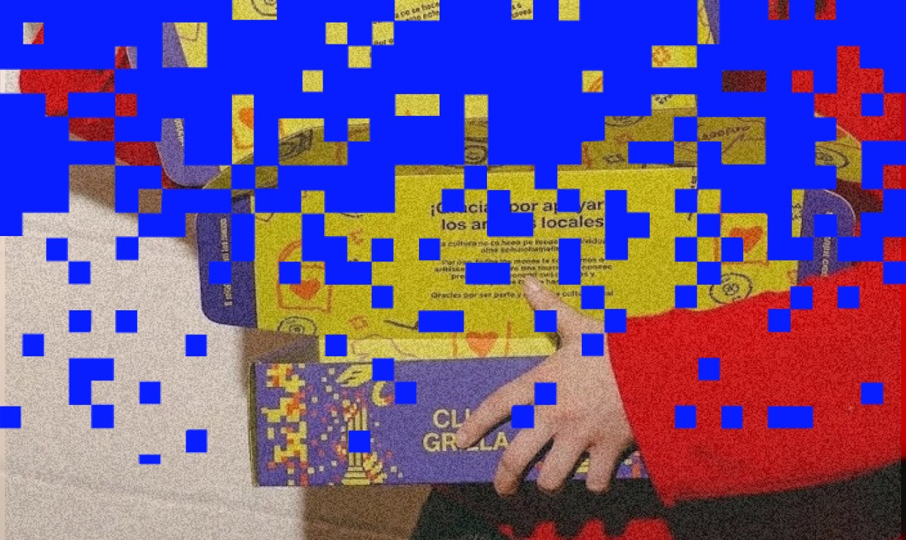

Club Grilla
Grilla presenta Club Grilla, un programa de membresías pensado para impulsar, disfrutar y conectar de cerca con la escena cultural independiente de Rosario y la región. Un espacio diseñado para encontrarnos, compartir experiencias y construir comunidad junto a sus protagonistas, tales como artistas, músicos, productores, gestores y referentes locales.
Además, Club Grilla ofrece acceso preferencial a la programación especial y eventos destacados. Sumándote a la comunidad, vas a acceder a beneficios exclusivos en la red de espacios independientes, descuentos en entradas y encuentros con especialistas para vivir de adentro las tendencias, debates y novedades de nuestra cultura.
Para más información escribir a club@grilla.com.ar
